Lost In The Crowd
 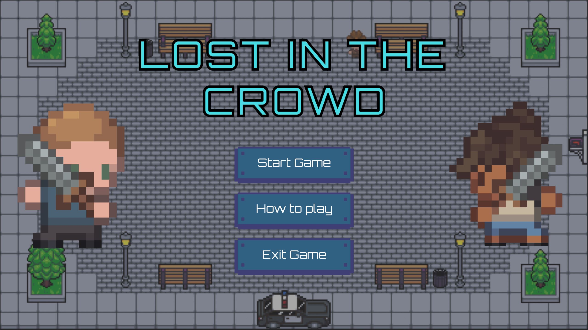
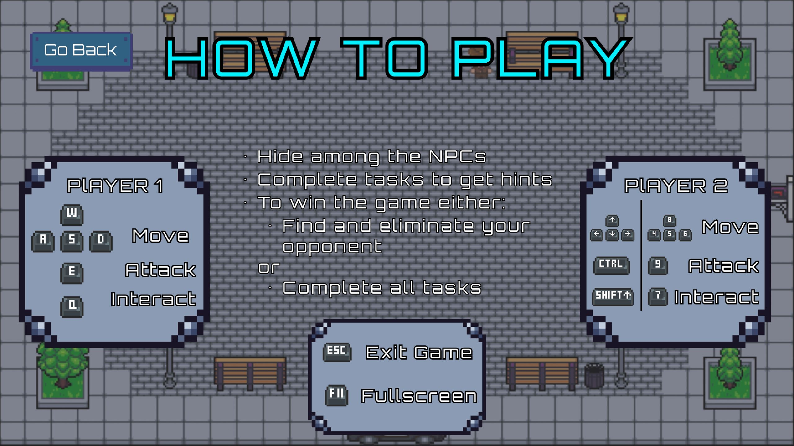
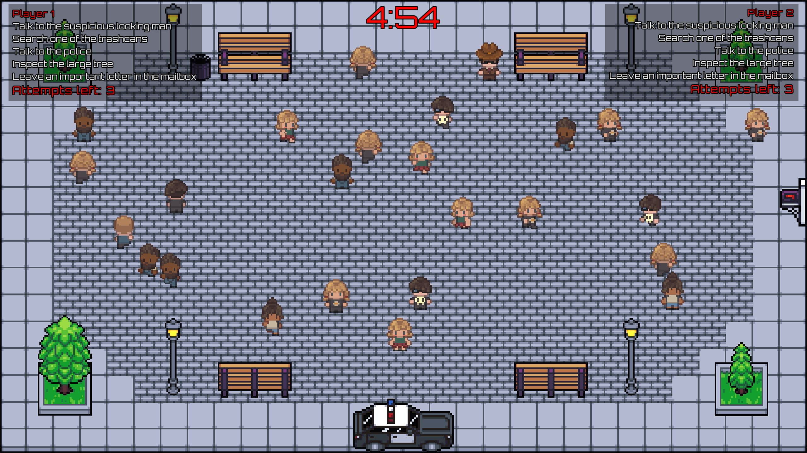
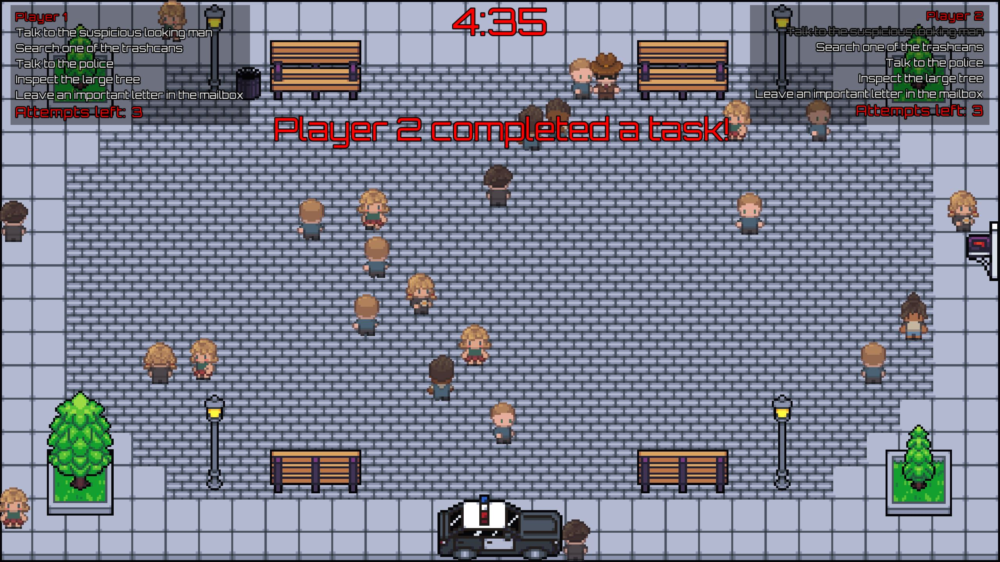
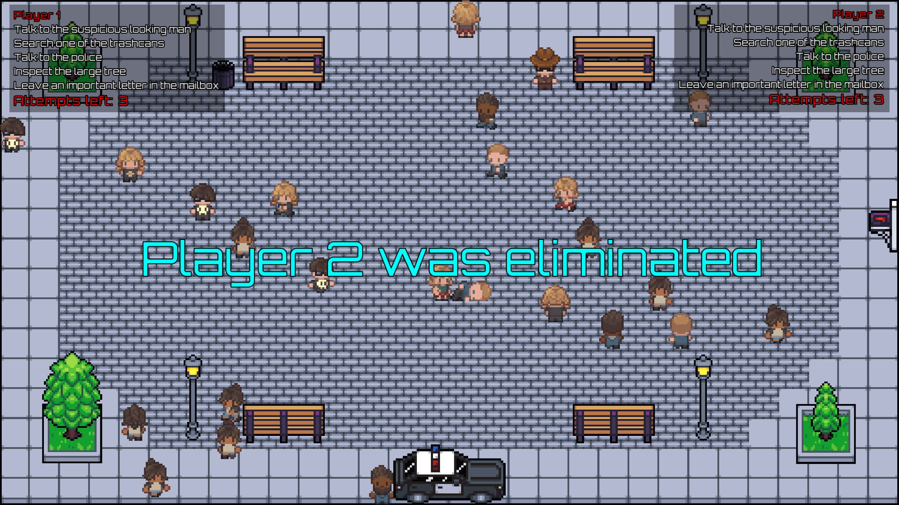
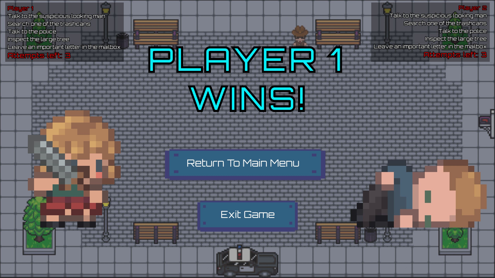
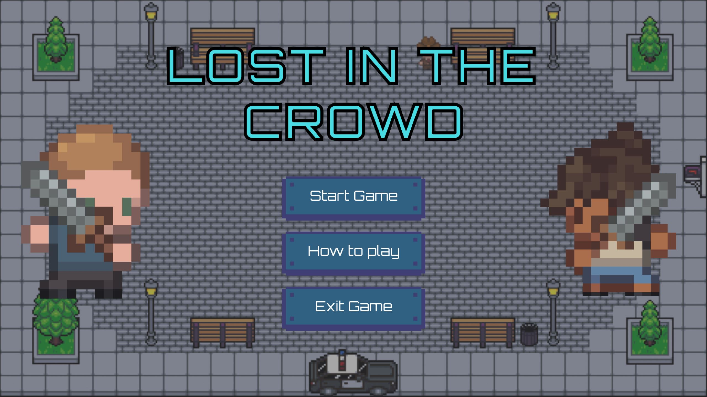
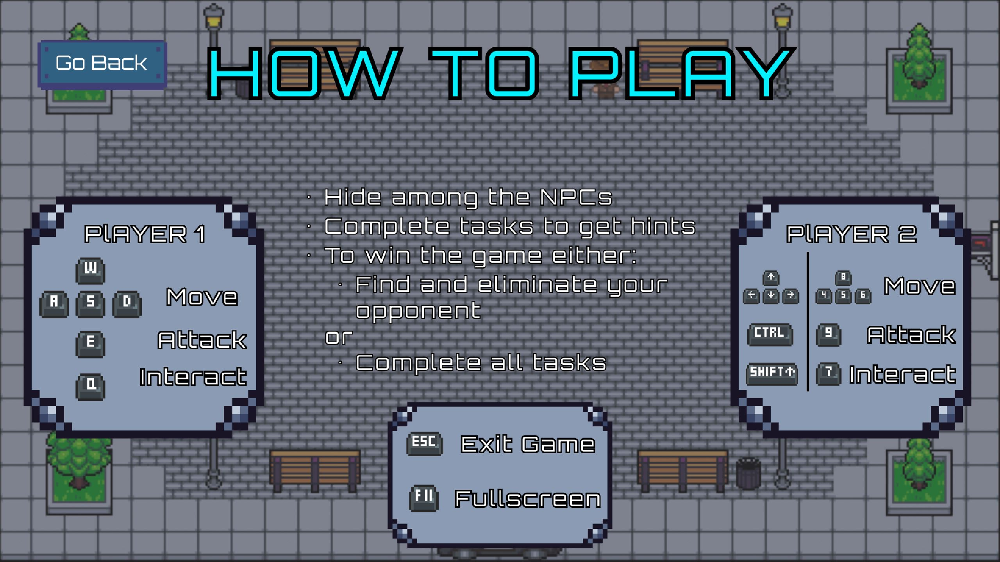
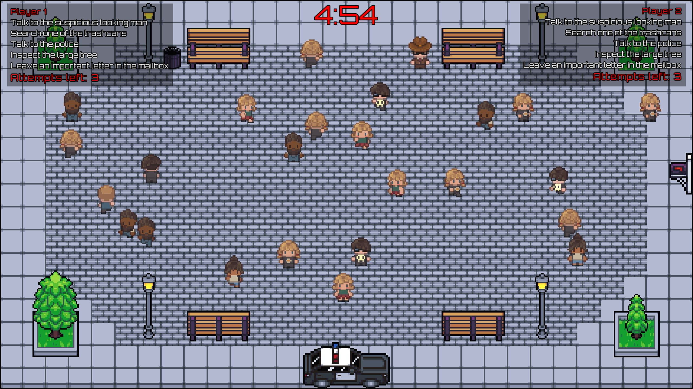
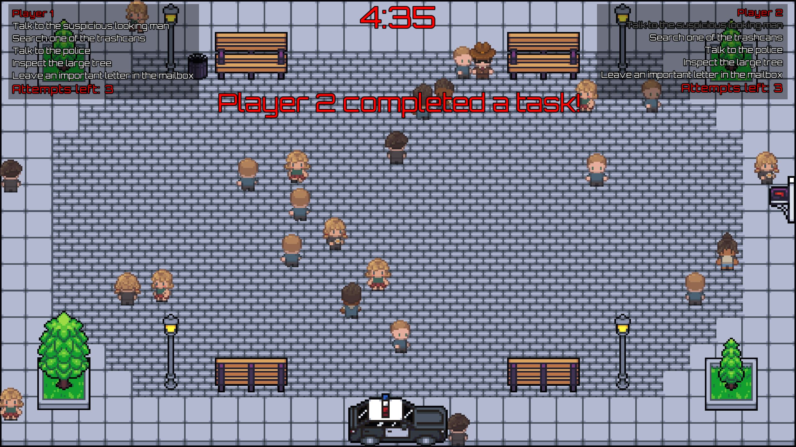
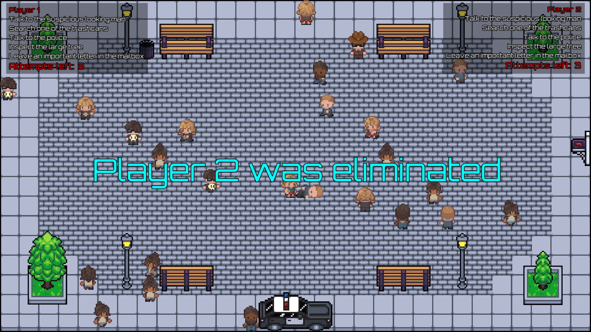
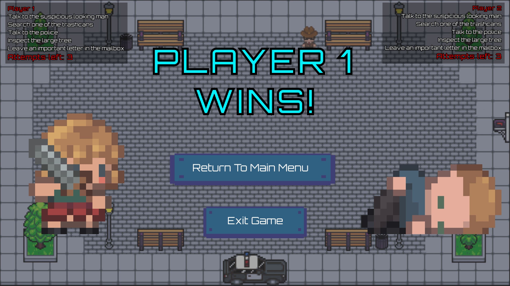
Gameplay
Lost In The Crowd is a 1v1 local-multiplayer
NPC-Hide-And-Seek Game. The main objective is to find and
eliminate your opponent. Of course, both players have the
same objective, so they have to try and stay undetected
while looking for their opponent. To achieve this, they have
to try to act natural and move like the NPCs around them. If
a player has a guess on who their opponent might be, they
can try to get closer and eliminate them (without being too
obvious of course). However, the players only have limited
attempts, so they can’t just kill anyone.
But
killing your opponent is not the only way to win! Both
players also have a list of tasks they can complete to gain
advantages. If one player manages to finish their tasks,
they win the game. They also get small hints on their
opponent for completing tasks. However, these tasks are not
without risk! If a player completes a task, their opponent
will be informed shortly after, which might reveal their
identity. Since there are multiple ways to win the game, the
players can choose their own strategies and adapt their
playstyle accordingly.
Development
Lost In The Crowd was the first proper game I ever created.
It was made in the second semester of my bachelor’s
programme using SFML in C# . Since the game was developed by
me alone, I mostly used 3rd party assets in order to focus
on the programming.
The whole development process took a bit over one
month. The first few weeks were made up of programming.
After that, I had a short playtesting session, were I got
some feedback from fellow students. I then used the
remaining time to implement some of the feedback and polish
the game.